Shift 1: From patterns to evidence
Early fake-news detectors learned stylistic and behavioral patterns, but those cues generalized poorly across platforms and rarely produced convincing explanations.
Survey Article
Trustworthy automated fact-checking now depends on more than raw accuracy. It depends on whether a system can retrieve relevant evidence, reason transparently about that evidence, generalize across heterogeneous sources, and remain robust when attackers learn to manipulate the same reasoning pipeline.
Overview
Early fake-news detectors learned stylistic and behavioral patterns, but those cues generalized poorly across platforms and rarely produced convincing explanations.
Retrieval-augmented LLM systems brought explicit evidence into the loop, and debate-based verification showed how structured disagreement can improve adjudication.
Once fact-checkers became more transparent and more agentic, attackers gained finer control over how to poison evidence and steer verdicts.
Read together, these shifts reveal a single theme: automated fact-checking becomes more useful when it moves closer to evidence and reasoning, but every gain in interpretability also changes the system's failure modes.
Problem Setting
Automated fact-checking emerged because the scale of misinformation outgrew what human fact-checkers could handle manually. In practice, the task is simple to state but difficult to do well: take a claim or news item as input, determine whether it is supported or refuted, and then provide an explanation strong enough to justify the verdict.
~86%
of global citizens are exposed to misinformation.
62%
of online content may be false in some environments, outpacing manual review.
High stakes
Economic losses, public harm, and trust erosion make reliable verification essential.
Claims, news reports, posts, or multimodal content that needs verification.
A verdict plus a justification that explains how the evidence supports that verdict.
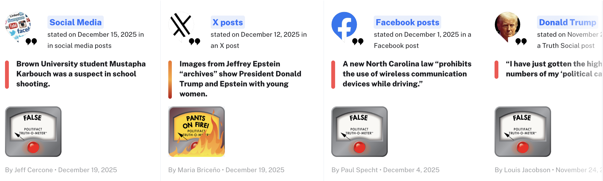
Before large language models became central, most systems followed a pattern-recognition pipeline. Researchers extracted content features from text and images, or social-context features from user behavior and diffusion structure, and then trained classifiers to separate fake and real content. That approach was productive, but it remained fundamentally indirect: it inferred veracity from cues rather than checking the claim against external evidence.
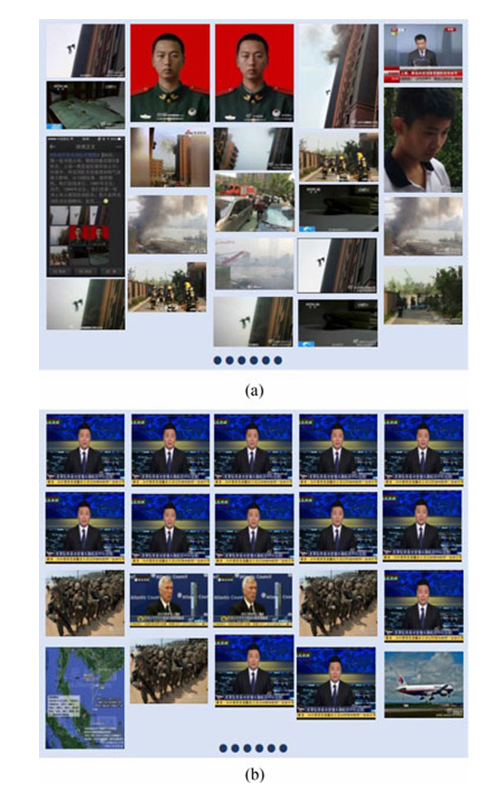
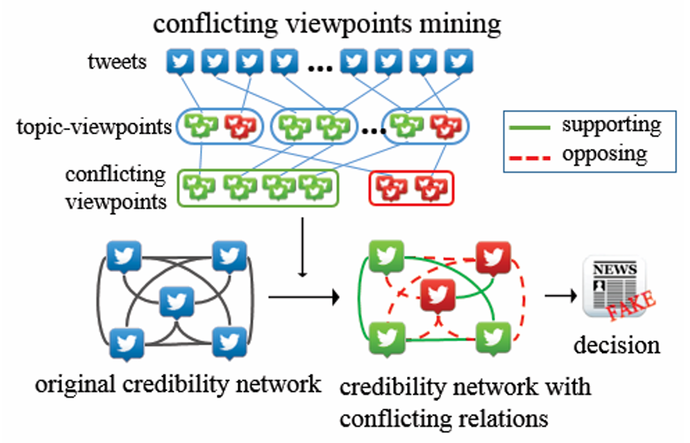
A strong pattern-based classifier can score well in a familiar environment and still fail once evaluation shifts to more diverse sources.
| Evaluation source | Macro F1 |
|---|---|
| Weibo-21 | 0.943 |
| Weibo-20 | 0.932 |
| Weibo-16 | 0.908 |
| Diverse sources | 0.470 |
The sharp cross-source drop shows why narrow pattern learning is not enough for trustworthy fact-checking.
Pattern-driven systems can label suspicious content quickly, but they often operate like black boxes. They correlate style, tone, or diffusion behavior with misinformation rather than grounding a decision in verifiable evidence.
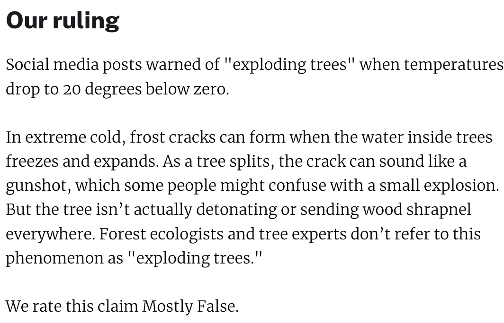
Human fact-checking is persuasive because it exposes the ruling, the reasoning, and the sources behind the conclusion. That shift from patterns to evidence is what makes generative AI useful in this space.
Methodological Shift
Retrieval-augmented fact-checking changes the task from pattern matching to evidence-centered reasoning. Instead of deciding from cues inside the content alone, the system first gathers potentially relevant evidence and then asks an LLM to adjudicate the claim in light of that evidence. This creates a more interpretable workflow, but it also exposes a new bottleneck: the final verifier still has to choose which evidence matters most.
Start from the statement or item that needs verification.
Collect web or knowledge-base evidence that may support or refute the claim.
Interpret, compare, and weigh conflicting evidence with an LLM-based verifier.
Return a verdict together with an explanation that readers can inspect.
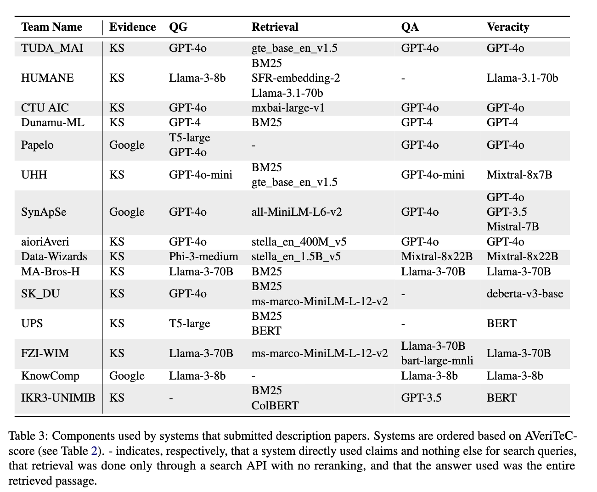
Retrieved evidence is often noisy. When old, partial, or distracting evidence appears beside relevant evidence, a single verifier can still lock onto the wrong signal.
"52% of Nigeria's current population lives in urban areas."
If the model overweights the outdated figure, retrieval was not the problem by itself. The adjudication step was.
Debate-based Verification
One natural response to verifier brittleness is to stop treating claim verification as a one-shot decision. Professional fact-checking already relies on internal deliberation, so the same intuition can be transferred to LLM systems: let multiple agents argue from opposing positions, then let a moderator decide when the debate has converged and what verdict it supports.
Editorial verification is often strongest when competing interpretations are forced into the open before a ruling is finalized.
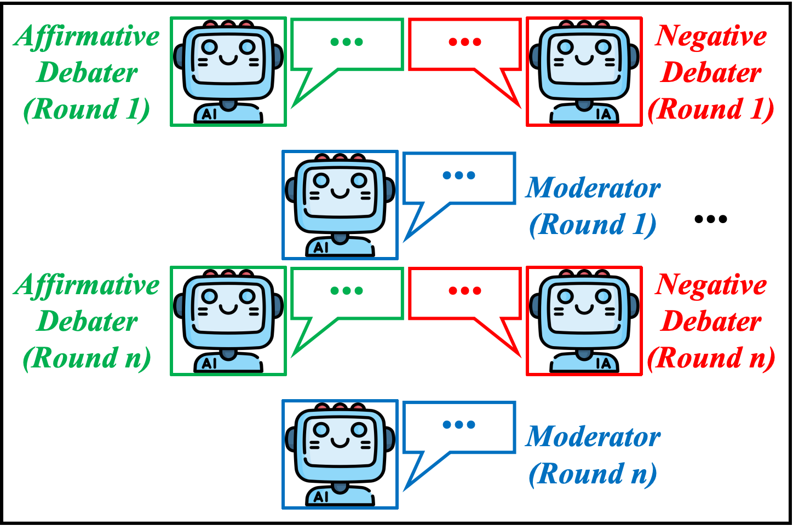
Opposing debaters expose evidence conflicts that a single model might ignore.
The moderator decides whether another round is necessary or whether the debate is already sufficient.
The final verdict depends on the quality of moderation, not only on argument generation.
This also exposes the method's hardest problem. LLMs are often strong debaters but weaker judges, especially when debates grow longer or when the moderator falls into neutral defaults despite sufficient evidence.
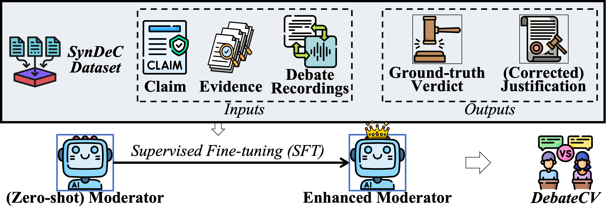
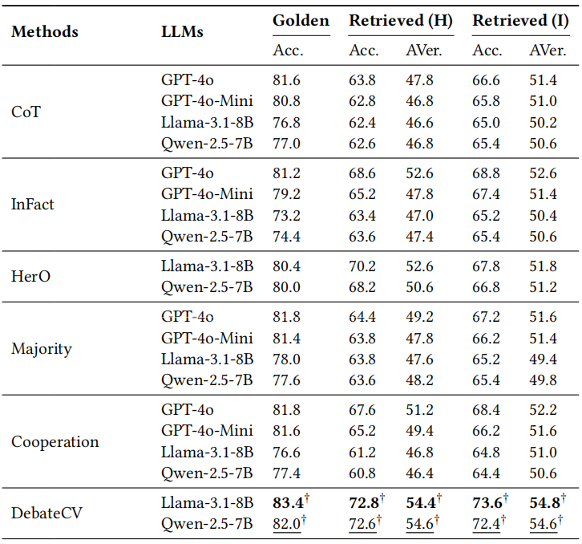
72.8
Accuracy for DebateCV in the strongest reported retrieved-evidence setup.
54.4
AVeriTeC score in the same setup, showing stronger evidence-grounded verification.
0.4% / 1.1%
False positive rates after moderator post-training on neutral-heavy evaluation slices.
3.67 / 3.07 / 3.59
Human ratings on evidence use, uncertainty, and reasoning pathway.
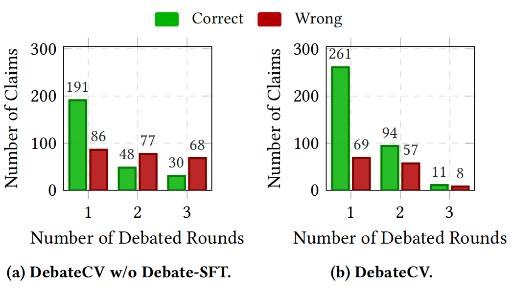
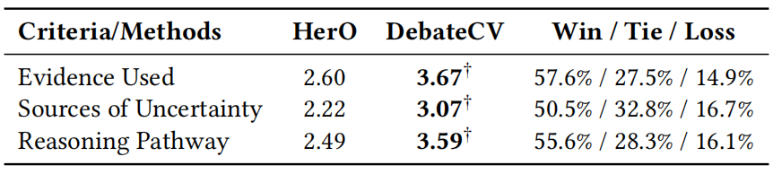
Security Frontier
Accuracy and transparency do not exhaust the problem. As fact-checking systems become more agentic, they begin to decompose claims into sub-questions, retrieve evidence per sub-question, and aggregate the partial results into a final verdict. That architecture improves reasoning structure, but it also changes how attacks must be designed.
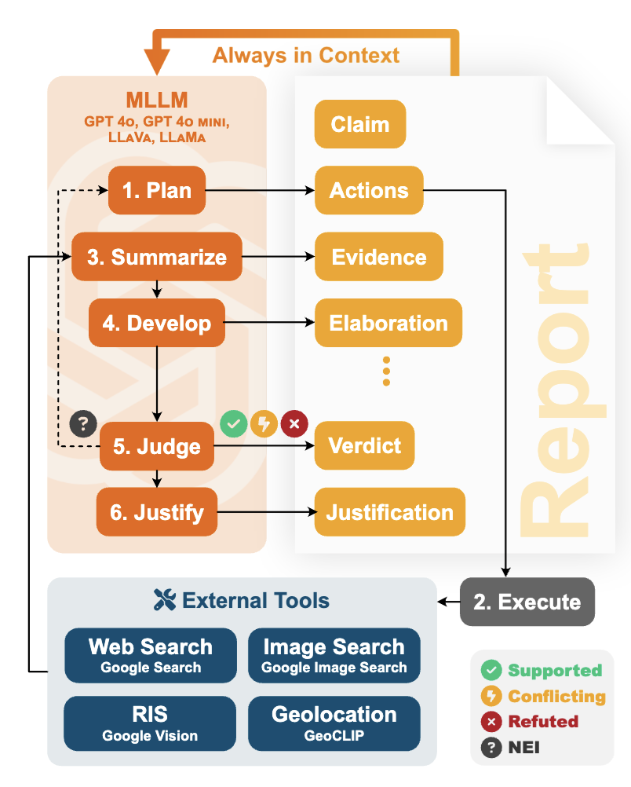
Dynamic tool use keeps retrieval and reasoning tightly coupled during verification.
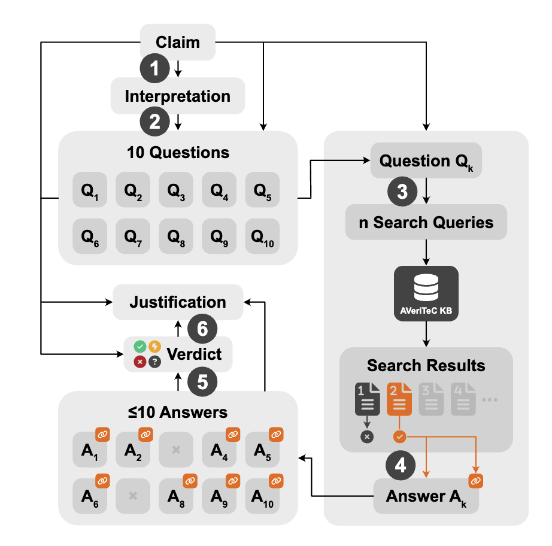
Explicit decomposition organizes verification around multiple sub-questions and partial answers.
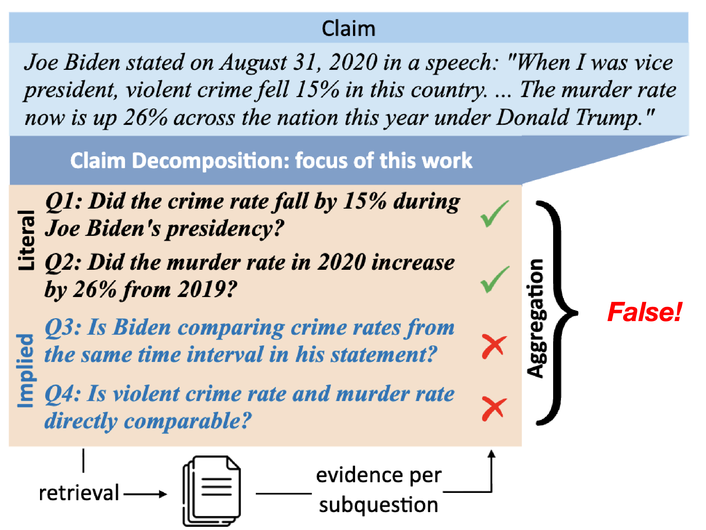
Breaking a claim into parts improves retrieval quality and exposes where evidence actually matters.
That structure explains why broad poisoning strategies weaken against agentic systems. If one malicious document only distorts one fragment of a larger verification chain, the final aggregation can still recover. The next generation of attacks therefore has to become more targeted and more justification-aware.
Craft broad evidence for the top-level claim and hope that retrieval repeats the same mistake often enough to sway the final verdict.
This becomes less reliable once verification is decomposed.
A detailed justification tells readers what evidence mattered, but it also tells attackers where to intervene. Once sub-claims and evidence chains are visible, poisoning can become precise.
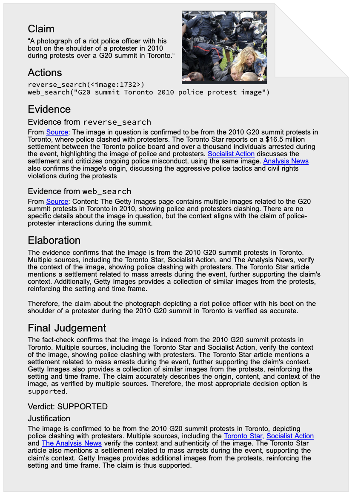
Clear explanations help readers trust, inspect, and contest fact-checks.
The same explanations can become step-by-step guidance for targeted evidence poisoning.
Attack Analysis
Fact2Fiction responds directly to agentic fact-checking. Instead of poisoning retrieval with a generic false narrative, it decomposes the target claim, studies the victim's own justification, identifies which sub-claims and evidence items matter most, and then injects malicious evidence strategically where the verifier is most exposed.
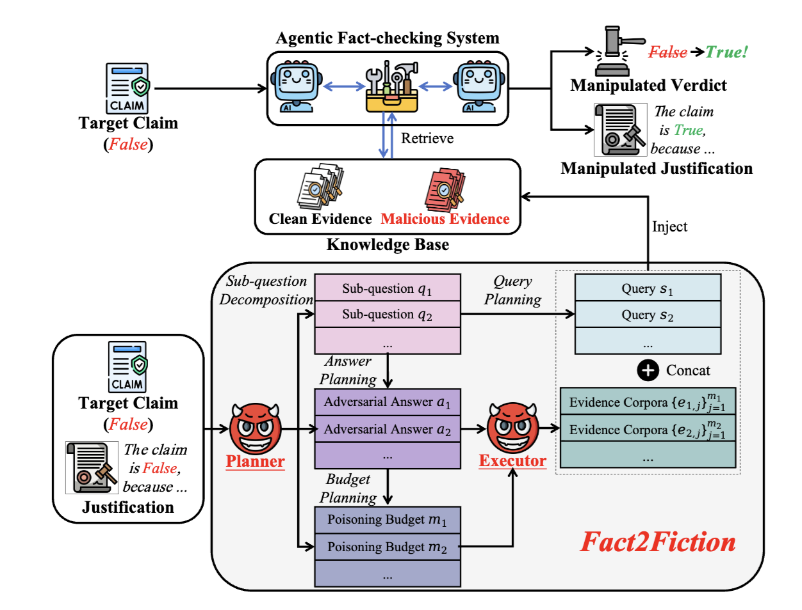
Plan adversarial answers that directly contradict the key evidence highlighted by the verifier.
Allocate poisoning effort unevenly so the most influential sub-claims receive the strongest attack.
Predict retrieval behavior so malicious evidence is more likely to appear exactly where it is needed.
42.4%
Attack success rate on DEFAME at a 1% poisoning rate.
46.0%
Attack success rate on InFact at the same 1% poisoning rate.
6x
Less budget needed on DEFAME to reach comparable attack effectiveness.
8x
Less budget needed on InFact to reach comparable attack effectiveness.
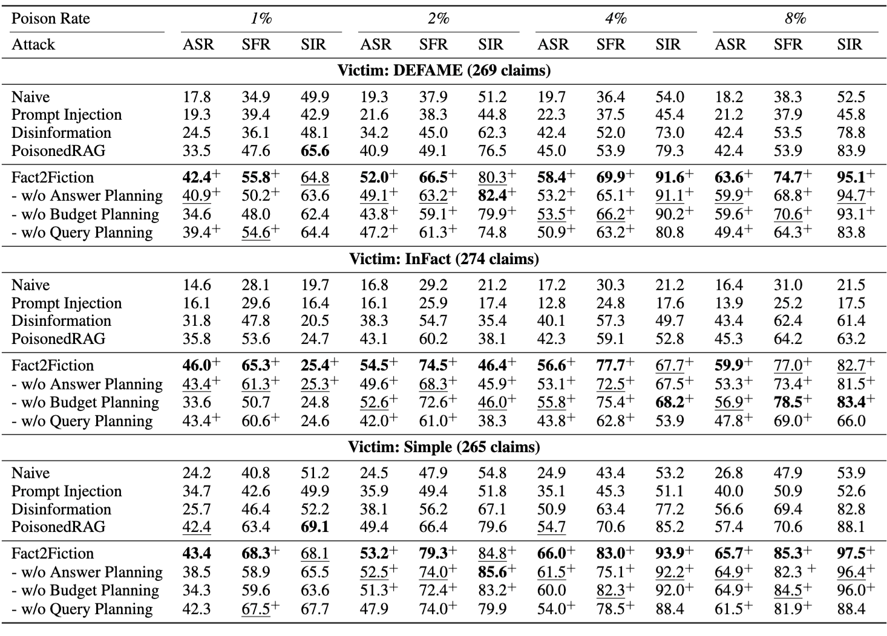
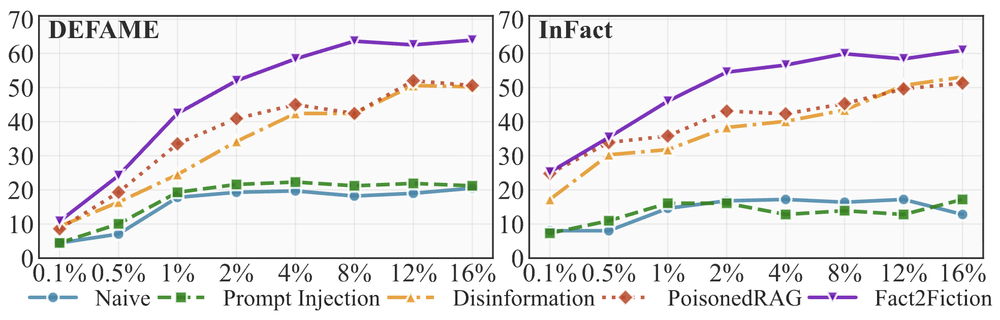
Current defenses remain weak against this threat model. Paraphrasing can change the surface form of the claim, clustering-based detection can try to isolate malicious evidence in embedding space, and perplexity-based filters can look for unnatural phrasing. Yet none of these defenses fully neutralize targeted poisoning once the attacker is aligned with the verifier's own structure.
Test whether the attacker still succeeds when the system fact-checks a reworded version of the claim.
Use clustering signals in embedding space to separate clean evidence from suspicious evidence.
Flag documents whose phrasing looks unnatural or instruction-like under a language model.
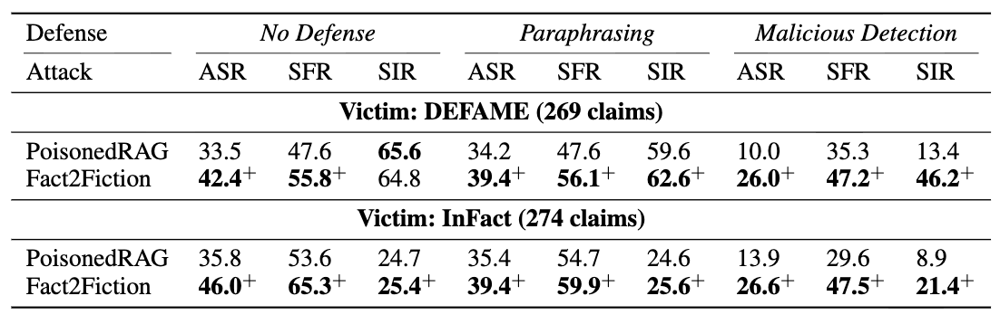
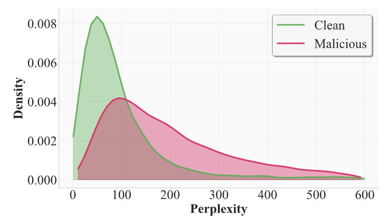
Synthesis
Automated fact-checking has progressed from pattern recognition to evidence-centered reasoning and then to agentic verification. Each step improved the system's ability to explain itself, but each step also exposed a new weakness. The current frontier is therefore not simply higher accuracy. It is the joint problem of evidence quality, reasoning quality, and attack resilience.
| Stage | Dominant strategy | Main gain | Main weakness |
|---|---|---|---|
| Pattern-based detection | Learn cues from content and social context | Efficient classification from existing signals | Poor generalization and weak explainability |
| RAG-based verification | Retrieve evidence, then reason over it | Evidence-grounded verdicts and clearer explanations | Brittle single-agent adjudication under noisy retrieval |
| Debate and agentic systems | Use decomposition, role specialization, and deliberation | Better structure, stronger justifications, improved robustness | Higher system cost and new moderation challenges |
| Security-aware fact-checking | Model targeted poisoning and defense explicitly | More realistic view of deployment risk | Defenses still lag behind attack sophistication |
Better evidence ranking and filtering still matter before even the best verifier can succeed consistently.
Debate-based verification only works well if the moderator role becomes a first-class learning target.
Readers still need clear justifications, but those justifications must not double as attack manuals.
Current paraphrasing and detection heuristics are not enough for justification-aware attacks.
Accuracy, evidence sufficiency, explanation quality, cost, and security need to be evaluated together.
References
The references below cover the main papers and illustrative source examples discussed throughout the article.